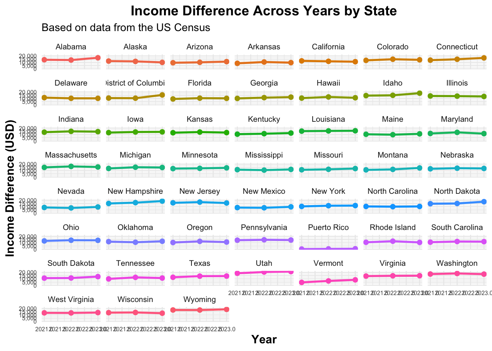

── Conflicts ────────────────────────────────────────── tidyverse_conflicts() ──
✖ dplyr::filter() masks stats::filter()
✖ readr::guess_encoding() masks rvest::guess_encoding()
✖ dplyr::lag() masks stats::lag()
ℹ Use the conflicted package (<http://conflicted.r-lib.org/>) to force all conflicts to become errors
library(wesanderson)library(wordcloud2)
Part 1
Choose a question to investigate. Describe what is the question you aim to answer with the data and what you want to visualize.
How was the income gap between men and women, measured by the difference in median income, varied across US states over the past three years?
Extract data from the tidycensus API. Use at least three different calls to the tidycensus API to extract out different datasets. For example, these could be across years, locations, or variables.
# A tibble: 6 × 3
name label concept
<chr> <chr> <chr>
1 B01001A_001 Estimate!!Total: SEX BY AGE (WHITE ALONE)
2 B01001A_002 Estimate!!Total:!!Male: SEX BY AGE (WHITE ALONE)
3 B01001A_003 Estimate!!Total:!!Male:!!Under 5 years SEX BY AGE (WHITE ALONE)
4 B01001A_004 Estimate!!Total:!!Male:!!5 to 9 years SEX BY AGE (WHITE ALONE)
5 B01001A_005 Estimate!!Total:!!Male:!!10 to 14 years SEX BY AGE (WHITE ALONE)
6 B01001A_006 Estimate!!Total:!!Male:!!15 to 17 years SEX BY AGE (WHITE ALONE)
B20017_002 male median income; B20017_005 female median income
# Call 1: Median Income by Sex for 2021income_2021 <-get_acs(geography ="state",variables =c(male_income ="B20017_002", female_income ="B20017_005"),year =2021,survey ="acs1")
Getting data from the 2021 1-year ACS
The 1-year ACS provides data for geographies with populations of 65,000 and greater.
# Call 2: Median Income by Sex for 2021income_2022 <-get_acs(geography ="state",variables =c(male_income ="B20017_002", female_income ="B20017_005"),year =2022,survey ="acs1")
Getting data from the 2022 1-year ACS
The 1-year ACS provides data for geographies with populations of 65,000 and greater.
# Call 3: Median Income by Sex for 2023income_2023 <-get_acs(geography ="state",variables =c(male_income ="B20017_002", female_income ="B20017_005"),year =2023,survey ="acs1")
Getting data from the 2023 1-year ACS
The 1-year ACS provides data for geographies with populations of 65,000 and greater.
Clean the data. Include some form of data wrangling and data visualization using packages such as dplyr or tidyr. Other packages that might be helpful to you include lubridate, stringr, and forcats. You must use at least two functions from purrr.
# Step 6: Reorder the table by year and income difference using arrange (dplyr)income_total <- income_total %>%arrange(year, income_difference)print(income_total)
Visualize the data. Create data visualizations of your choice. However, your analysis should include at least three plots with you using at least two different geom_*() functions from ggplot2 (or another package with geom_*() functions).
# Plot 1: Income by Sex and States (2021-2023) using geom_bar## Reshape the data to long formatincome_total_long <- income_total %>%pivot_longer(cols =c(male_income, female_income), names_to ="sex", values_to ="income", names_prefix ="sex_") ggplot(income_total_long, aes(x = NAME, y = income, fill = sex)) +geom_bar(stat ="identity", position ="dodge") +facet_wrap(~year, ncol =1) +# Ensure facets are in one rowlabs(title ="Income by Sex and State", x ="U.S States", y ="Median Income (USD)") +scale_x_discrete(labels =function(x) str_wrap(x, width =25)) +scale_fill_manual(values =c("female_income"="coral", "male_income"="salmon4"),labels =c("Female", "Male") ) +theme_grey() +theme(plot.title =element_text(size =14, face ="bold", hjust =0.5),axis.title =element_text(size =11, face ="bold"),axis.text.x =element_text(size =6, angle =45, hjust =1), axis.text.y =element_text(size =8),legend.text =element_text(size =8),legend.title =element_text(size =10, face ="bold"),legend.position ="bottom",panel.spacing =unit(1, "lines") )
# Plot 2: Income Difference by Sex and States (2023) using geom_colincome_total_2023 <- income_total %>%filter(year ==2023)ggplot(income_total_2023, aes(x = NAME, y = income_difference)) +# Don't map fill to NAMEgeom_col(fill ="lightsteelblue2") +# Set all bars to the color you wantlabs(title ="Income Difference by State", x ="U.S States", y ="Income Difference (USD)") +scale_x_discrete(labels =function(x) str_wrap(x, width =25)) +# Wrap state names if neededtheme_minimal() +theme(plot.title =element_text(size =14, face ="bold", hjust =0.5),axis.title =element_text(size =11, face ="bold"),axis.text.x =element_text(size =7, angle =45, hjust =1), axis.text.y =element_text(size =8),panel.spacing =unit(1, "lines"))
# Plot 3: Income Difference Across Years by State using geom_lineggplot(income_total, aes(x = year, y = income_difference, color = NAME, group = NAME)) +geom_line(size =1) +geom_point(size =2) +labs(title ="Income Difference Across Years by State",x ="Year",y ="Income Difference (USD)" ) +scale_y_continuous(labels = scales::comma) +theme_minimal() +theme(plot.title =element_text(size =14, face ="bold", hjust =0.5),axis.title =element_text(size =12,face ="bold"),axis.text.x =element_text(size =6),axis.text.y =element_text(size =6),strip.text =element_text(size =8), legend.position ="none" ) +facet_wrap(~ NAME, ncol =7)
Warning: Using `size` aesthetic for lines was deprecated in ggplot2 3.4.0.
ℹ Please use `linewidth` instead.

Report your findings. Provide a paragraph summarizing your methods and key findings. Include any limitations or potential biases in pulling data from the API or the analysis. Be sure to comment and organize your code so is easy to understand what you are doing.
Part 2
In this part, you and your partner will use the rvest package to scrape data from a website, wrangle and analyze the data, and summarize your findings.
Choose a website to scrape. Select a website with structured data in HTML tables or well-defined sections. Some examples could include:
A movie database like IMDb or Rotten Tomatoes (scraping movie titles, ratings, release years, etc.)
A job listing site like Indeed or LinkedIn (scraping job titles, companies, and locations)
A sports statistics site like ESPN or Baseball Reference (scraping team statistics, player info, etc.)
# Michelin starred restaurants in New York City url <-"https://en.wikipedia.org/wiki/List_of_Michelin-starred_restaurants_in_New_York_City"
Extract data with rvest. Here, you will want to identify the specific HTML elements or CSS selectors containing the data. Then, use rvest functions like read_html(), html_elements(), and html_text() or html_table() to retrieve the data.
# A tibble: 6 × 7
Name Cuisine Borough/County - Neighbo…¹ `2021` `2022` `2023` `2024`
<chr> <chr> <chr> <chr> <chr> <chr> <chr>
1 63 Clinton Contemporary Manhattan - Lower East Si… "—" "" "" <NA>
2 Ai Fiori Italian Manhattan - Midtown South "" "—" "—" <NA>
3 Al Coro Italian Manhattan - Chelsea "—" "" "Clos… Close…
4 Aquavit Scandinavian Manhattan - Midtown "" "" "" <NA>
5 Aska Scandinavian Brooklyn - Williamsburg "" "" "" <NA>
6 Atera Contemporary Manhattan - Tribeca "" "" "" <NA>
# ℹ abbreviated name: ¹`Borough/County - Neighborhood`
Clean the data. Next, perform some basic wrangling, such as remove extra whitespace, handle missing values, and convert data types as needed. You might find the functions from dplyr or tidyr useful for any additional transformations, such as renaming columns, filtering rows, or creating new variables.
# Step 1: Remove row if Cuisine or Borough/Country is NA using filter (dplyr)michelin_table <- michelin_table %>%filter(!is.na(Cuisine) &!str_trim(Cuisine) ==""&!is.na(`Borough/County - Neighborhood`) &!str_trim(`Borough/County - Neighborhood`) =="")
# Step 2: Create new variable on Open/Closes Status using mutate (dplyr)michelin_table <- michelin_table %>%mutate(status =case_when(grepl("Closed|Temporarily Closed", `2023`) ~"Closed",TRUE~"Open" ))head(michelin_table)
# A tibble: 6 × 8
Name Cuisine Borough/County - Nei…¹ `2021` `2022` `2023` `2024` status
<chr> <chr> <chr> <chr> <chr> <chr> <chr> <chr>
1 63 Clinton Contempo… Manhattan - Lower Eas… "—" "" "" <NA> Open
2 Ai Fiori Italian Manhattan - Midtown S… "" "—" "—" <NA> Open
3 Al Coro Italian Manhattan - Chelsea "—" "" "Clos… Close… Closed
4 Aquavit Scandina… Manhattan - Midtown "" "" "" <NA> Open
5 Aska Scandina… Brooklyn - Williamsb… "" "" "" <NA> Open
6 Atera Contempo… Manhattan - Tribeca "" "" "" <NA> Open
# ℹ abbreviated name: ¹`Borough/County - Neighborhood`
# Step 3: Create new variable on Neighborhood using mutate (dplyr)michelin_table <- michelin_table %>%mutate(neighborhood =sapply(strsplit(as.character(`Borough/County - Neighborhood`), " - "), `[`, 1))head(michelin_table)
# A tibble: 6 × 9
Name Cuisine Borough/County - Nei…¹ `2021` `2022` `2023` `2024` status
<chr> <chr> <chr> <chr> <chr> <chr> <chr> <chr>
1 63 Clinton Contempo… Manhattan - Lower Eas… "—" "" "" <NA> Open
2 Ai Fiori Italian Manhattan - Midtown S… "" "—" "—" <NA> Open
3 Al Coro Italian Manhattan - Chelsea "—" "" "Clos… Close… Closed
4 Aquavit Scandina… Manhattan - Midtown "" "" "" <NA> Open
5 Aska Scandina… Brooklyn - Williamsb… "" "" "" <NA> Open
6 Atera Contempo… Manhattan - Tribeca "" "" "" <NA> Open
# ℹ abbreviated name: ¹`Borough/County - Neighborhood`
# ℹ 1 more variable: neighborhood <chr>
# Step 4: Create new variable on Cuisine using mutate (dplyr)michelin_table <- michelin_table %>%mutate(cuisine =sapply(strsplit(as.character(Cuisine), ", "), `[`, 1))head(michelin_table)
# A tibble: 6 × 10
Name Cuisine Borough/County - Nei…¹ `2021` `2022` `2023` `2024` status
<chr> <chr> <chr> <chr> <chr> <chr> <chr> <chr>
1 63 Clinton Contempo… Manhattan - Lower Eas… "—" "" "" <NA> Open
2 Ai Fiori Italian Manhattan - Midtown S… "" "—" "—" <NA> Open
3 Al Coro Italian Manhattan - Chelsea "—" "" "Clos… Close… Closed
4 Aquavit Scandina… Manhattan - Midtown "" "" "" <NA> Open
5 Aska Scandina… Brooklyn - Williamsb… "" "" "" <NA> Open
6 Atera Contempo… Manhattan - Tribeca "" "" "" <NA> Open
# ℹ abbreviated name: ¹`Borough/County - Neighborhood`
# ℹ 2 more variables: neighborhood <chr>, cuisine <chr>
# A tibble: 6 × 4
Name status neighborhood cuisine
<chr> <chr> <chr> <chr>
1 63 Clinton Open "Manhattan" Contemporary
2 Ai Fiori Open "Manhattan" Italian
3 Al Coro Closed "Manhattan" Italian
4 Aquavit Open "Manhattan" Scandinavian
5 Aska Open "Brooklyn " Scandinavian
6 Atera Open "Manhattan" Contemporary
# Step 6: Arrange by neighborhood using arrange (dplyr)michelin_table <- michelin_table %>%arrange('neighborhood')head(michelin_table)
# A tibble: 6 × 4
Name status neighborhood cuisine
<chr> <chr> <chr> <chr>
1 63 Clinton Open "Manhattan" Contemporary
2 Ai Fiori Open "Manhattan" Italian
3 Al Coro Closed "Manhattan" Italian
4 Aquavit Open "Manhattan" Scandinavian
5 Aska Open "Brooklyn " Scandinavian
6 Atera Open "Manhattan" Contemporary
Analyze the data. Perform a simple analysis of your choice. For example, you could
Count how many times specific words or themes appear.
cuisine_wordcloud <-data.frame(word =table(michelin_table$cuisine), freq =as.integer(table(michelin_table$cuisine)) )# Create the word cloud and save it to an HTML filesaveWidget(wordcloud2(cuisine_wordcloud, color =wes_palette("GrandBudapest2"), # Word colorbackgroundColor ="lavenderblush", # Background colorsize =0.5, # SizeminRotation =0, maxRotation =0), # Horizontal orientation"cuisine_wordcloud.html"# Save as HTML file)# Display the word cloud using iframe in RStudio Viewer or Shinyhtmltools::tags$iframe(src ="cuisine_wordcloud.html", width ="100%", height ="500px")
Create a summary statistic (e.g., average rating, job salary, team win percentage).
Create a data visualization (e.g., bar chart, histogram) of an interesting metric.
Report your findings. Provide a paragraph summarizing your methods and key findings. Include any limitations or potential biases in your scraping or analysis. Be sure to comment and organize your code so is easy to understand what you are doing.